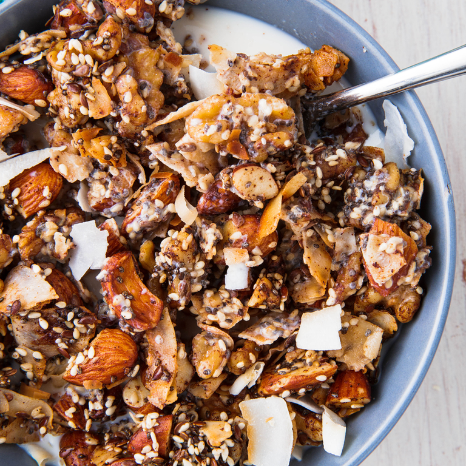

Keto Cereal
Make a big batch of this granola and have an easy breakfast ready all week long. It even goes great sprinkled on top of Keto Ice Cream. Swap almonds and walnuts for pistachios, pecans, or pumpkin seeds. You can also add in some keto-friendly sweetener to satisfy that sweet tooth. The granola can be kept at room temperature stored in an air-tight container, but it may never make it off the sheet pan!
INGREDIENTS
- Cooking spray
- 1 c. almonds, chopped
- 1 c. walnuts, chopped
- 1 c. unsweetened coconut flakes
- 1/4 c. sesame seeds
- 2 tbsp. flax seeds
- 2 tbsp. chia seeds
- 1/2 tsp. ground clove
- 1 1/2 tsp. ground cinnamon
- 1 tsp. pure vanilla extract
- 1/2 tsp. kosher salt
- 1 large egg white
- 1/4 c. melted coconut oil
DIRECTIONS
- Preheat oven to 350° and grease a baking sheet with cooking spray. In a large bowl, mix together almonds, walnuts, coconut flakes, sesame seeds, flax seeds, and chia seeds. Stir in cloves, cinnamon, vanilla, and salt.
- Beat egg white until foamy then stir into granola. Add coconut oil and stir until everything is well coated. Pour onto prepared baking sheet and spread into an even layer. Bake for 20 to 25 minutes, or until golden, gently stirring halfway through. Let cool completely.